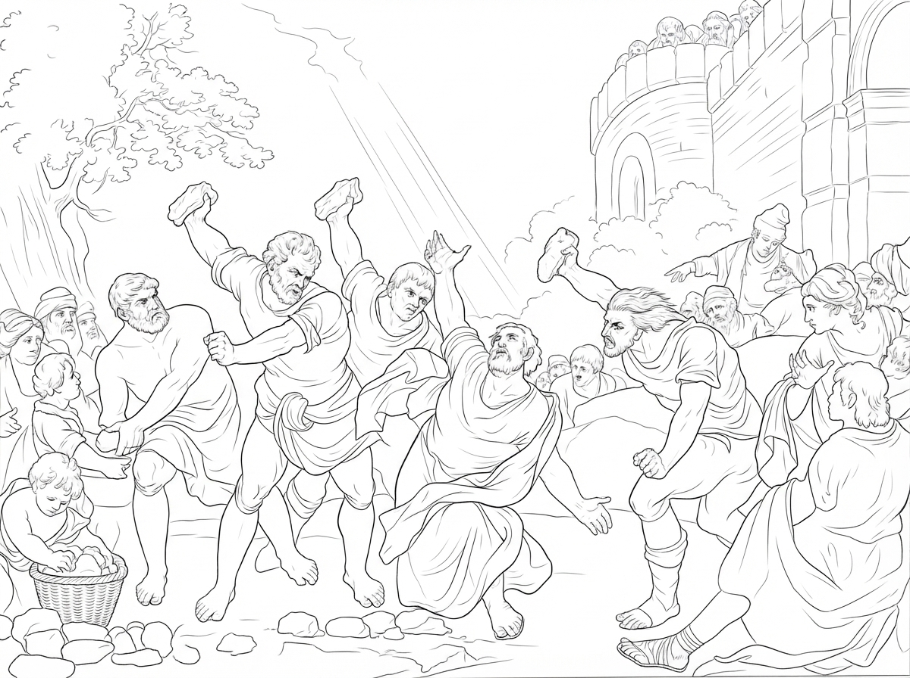
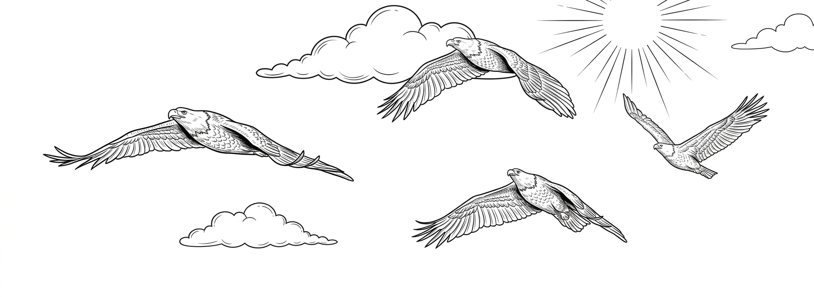
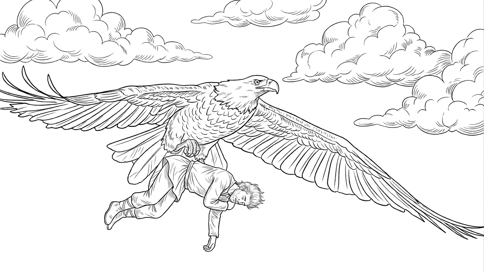

Chapter 10 of 12
Stephen Is Stoned to Death

That day, I flew across the familiar sky and along the cliffs above the sea. I missed my teacher. I missed my Golden Eagle companions. It was about the time they would be returning. Would they come back? Would I see them again? I had so many things to tell them. So many things I had seen.
My Golden Eagle teacher had taught me how to see what mortal eyes cannot see. He told me that an eagle's eyes were not merely for seeing farther. They were for seeing the glory the Creator wanted us to see.
Now I could see it.
True glory was Him.
Words of life came from His mouth.
His words were like light, entering the hearts of people.
He was tortured by the very people He loved. He was humiliated in the marketplace. Yet even when His body was covered with wounds, His dignity still shone.
That was true glory.
My Master.
Suddenly, I saw a light in the distant sky. I opened my eyes wide. At the center of the light, the shape of a Golden Eagle slowly appeared. It was my teacher. And beside him was an angel.
My teacher! I had so much to tell you. It would take many days to tell it all. I was even worried that I would speak too slowly, or that I would not find the right words. For years, I had practiced the moment when we would meet again. I was afraid that if I could not tell my stories well, you would not understand them.
But at that very moment, my Golden Eagle teacher looked into my eyes. I looked into his.
And in that instant, it seemed that he already knew every word I had wanted to say, every story I had wanted to tell, every thing I had seen during all those years. At that moment, I realized that words were unnecessary. We said nothing. We simply flew together, circling in the sky.
My teacher! I wished that moment could last forever. That you and I, together with the others, could keep flying all the way to the sunset at the edge of the world.

Suddenly, I heard the voice of the angel. It carried the strength of the whole sky. He called to me:
“Go. Carry Stephen to the throne in heaven.”
I did not know who Stephen was. I did not know what was happening below. But I knew this was my Master's command. So I spread my wings and followed the angel downward. We descended from the sky.
I saw several learned men leading an angry mob toward the center of the city. They were accusing a man named Stephen.
Their voices were too far away for me to understand clearly, but the wind heard everything. The wind often told me things it heard along the way. Sometimes I heard the wind sighing over humanity.
I heard farmers speaking of Stephen— of his noble character, and of all he had done for ordinary people. The farmers loved Stephen because he cared for them and taught them.
Then I saw three gray, shadowy frogs slipping through the angry crowd. I had a terrible feeling about them. The last time I had seen them, they had been hiding beneath a dead hen, trying to escape the vultures.
They were the lying frogs.
The wind had heard those three frogs spreading rumors about Stephen, claiming that he had spoken against their ancestors, against the Creator, and against many other things.
The mob moved toward Stephen.
Stephen raised his voice, trying to calm them.
The learned leaders told the crowd to be silent for a moment and gave Stephen one last opportunity to speak. The silence that followed was like the silence of vultures waiting before they descend upon their prey.
I saw Stephen standing in the middle of the dark, angry crowd. Above his head, he seemed to shine like a diamond.
Stephen began to speak. He started with a story from long ago. He spoke of Abraham. Of Joseph. Of Moses. Of how the people of Israel came out of Egypt. He spoke of how God had continually led His people, and how the human heart had repeatedly rejected Him. And finally, he spoke of my Master. He said that human beings had handed over the Righteous One to be killed. The people grew more and more furious as they listened. When Stephen finished speaking, they began throwing stones at him. Stone after stone fell upon him until Stephen disappeared beneath the heap.
I dove toward him at once. I reached him just before his body fell. I heard Stephen say:
“Lord Jesus, receive my spirit.”
Then his spirit left his body. I flew above Stephen and carefully grasped his spirit in my talons. I spread my wings around him to protect him. I held him as gently and firmly as I could, careful not to let my sharp talons wound him. Then I beat my wings with all my strength and rose from the earth. I followed the direction the angel had shown me and flew toward the throne in heaven. It was the fastest, hardest flight of my entire life.
His clothing fluttered in the wind. His eyes were closed. He curled himself inward and whispered:
“Lord, do not hold this sin against them.”
Then he fell asleep.

At last, I saw the dawn, the sea of glass, and the throne in heaven. At the center, before the sea of glass, a place had already been prepared for Stephen.
I descended gently and carefully laid him down.
Then I heard the thunderous applause of heaven. I saw my Master rise. He looked at Stephen and said:
“Well done, good and faithful servant. You have been faithful over a little on earth; I will set you over much. Come and share in the joy of your Master.”
Then my Master looked at me.
My face felt hot, because His eyes seemed to see straight through me. I could not speak. All I could manage was an awkward little:
“Ah!”
It was a very embarrassing moment to make such a sound in front of my Master.
But my Master knew how hard I had worked to bring Stephen there.
My Master knew.
Then the applause of heaven turned toward me. They applauded the care with which I had carried Stephen and gently laid him down. I heard the angels saying:
“Look at that strong eagle!”
How had I become a strong eagle? Then I noticed that my feathers and tail feathers were shining. My wings were no longer mottled. I had grown into a true eagle.
Only then did I realize that I had just carried a great and faithful servant of the Lord.
I flew joyfully across the sky, from east to west.
My spirit was glad.
My will was strong.
The whole sky seemed to belong to me.
I flew through the storm.
My eagle talons had become strong as steel.
With my mortal eyes, I could see the little creatures far below.
With my eagle eyes, I could discern the clouds of good and evil.
I was a masterpiece of the Creator.
I was an eagle who served my Lord.